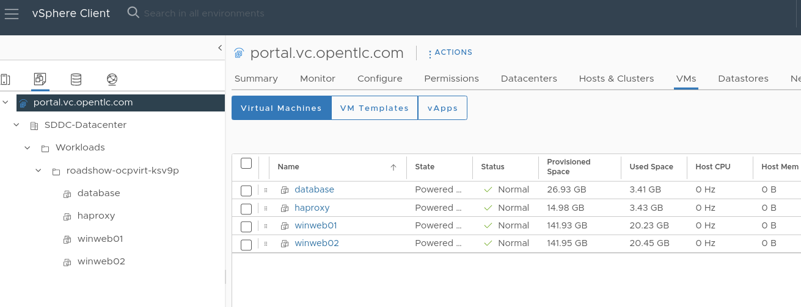

The VMware environment
Migrating Virtual Machines from VMware
A three-tier application has been deployed on VMware for you to migrate to OpenShift.
The application consists of the following four virtual machines:
-
One HAproxy system that redirects traffic to the web servers
-
Two Microsoft Windows servers with IIS hosting a PHP application connecting to the database
-
One Linux system running a MariaDB database
The application is accessible from the following link: http://webapp.vc.opentlc.com/
You will migrate three of the four virtual machines using cold migration - you will not need to migrate the HAproxy (load balancer) VM because OpenShift handles network traffic and load balancing natively for VMs connected to the SDN using a Service.
Review the VMware environment
To help understand the process of mapping resources, such as datastores and port groups, from vSphere into OpenShift’s equivalents, network attachment definitions and storage classes, let’s begin by reviewing the source environment for the migrations.
-
Navigate to vCenter via https://portal.vc.opentlc.com
-
Login with the user
vcenter_userand the passwordvcenter_password.You can find the vcenter_userandvcenter_passwordfrom Demo platform inAdvanced settings. -
By default you’ll see the VMs and Folders view, where you can see the four VMs representing the application.
The VMs with the suffix _runningare the active ones. As for the migration have to be stopped, a clone of the VMs were created for the migration. Those VMs are the ones without that suffix. -
Change to the networks view, then expand the tree to view the port group used by the virtual machines. Note that the name is
segment-migrating-to-ocpvirt. -
Finally, review the datastore by browsing to the datastores view. Expand the tree to see the name of the datastore,
WorkloadDatastore, and optionally browse to the VMs sub-tab to view the capacity used by each virtual machine.